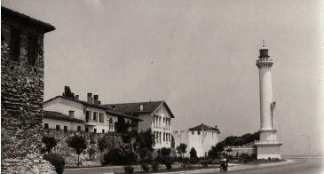

Ahırkapı Deniz Feneri 1755 yılında III. Osman tarafından yaptırılmıştır. İstanbul Boğazı’nın Marmara’ya bakan kısmının Batı kıyısındadır. Beyaz, kule şeklinde olan fener, İstanbul’u çeviren surların burçlarından birisinin üzerine oturtulmuştur. Denizden yüksekliği 40 metredir. Her altı saniyede bir yanıp sönerek gece karanlığında denizcilerin yön bulmalarına ve gemilerin karaya oturmamalarına yardımcı olur. Bu fener önemli bir deniz kazasından sonra yaptırılmıştır. Bu deniz kazası şudur: 1755 yılında Mısır’a gitmekte olan Hacı Kaptan yönetimindeki bir kalyon fırtınaya tutularak gece vakti Kumkapı’da karaya oturur. Olayı öğrenen Padişah III. Osman ve Sadrazam Sait Paşa derhal Kumkapı’ya giderek kalyon ve denizcilerin kurtarılmasına nezaret ederler. Kurtarılan gemicilerden birisi padişaha şöyle der: “Eğer burada ve surlar üzerinde bir fener yapılsa, uzağa gidip gelen gemiler ışığı görünce yollarını bulurlar.”
Bunun üzerine III. Osman bir fener yapılmasını emretmiş ve Kaptan-ı Derya Süleyman Paşa da Ahırkapı Feneri’ni yaptırmıştır.

Ahırkapı Deniz Feneri